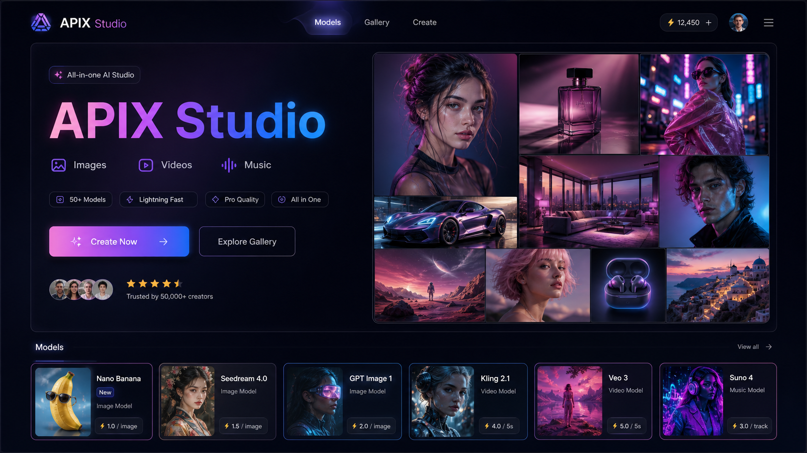
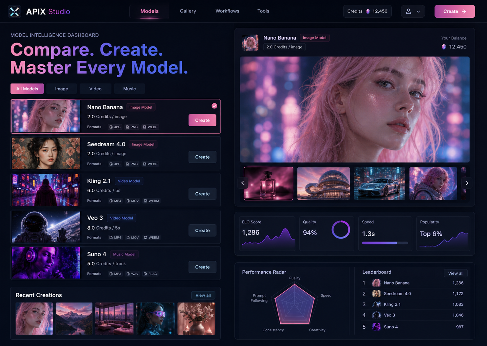
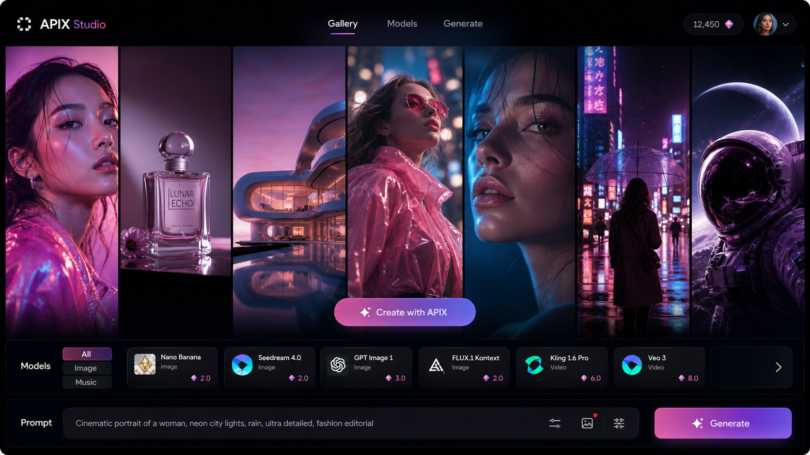
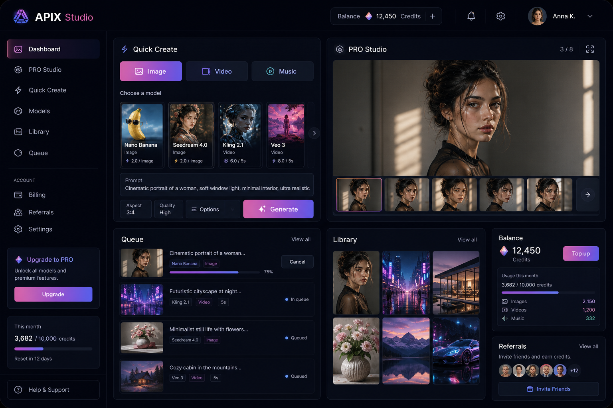

APIX Studio
APIX Studio
Гость · войдите через Telegram
Меню возможностей
Что хотите создать сегодня?
Выберите готовый сценарий: от идеи и первого изображения до видео, музыки, сохранения результата и пополнения баланса.

Создание
Картинки, видео и музыка
01
Опишите идею, добавьте фото при необходимости и получите готовый результат для поста, рекламы, презентации или личного проекта.
Начать создание
Возможности
Подберите нужный режим
02
Выбирайте сценарий под задачу: реалистичное фото, стильный арт, оживление изображения, короткий ролик или музыкальный трек.
Выбрать режим
Идеи
Примеры готовых работ
03
Смотрите, что уже получилось у других, сохраняйте удачные направления и запускайте похожий результат для своей задачи.
Смотреть примеры
Кабинет
Мои работы и баланс
04
Следите за готовностью задач, храните результаты, пополняйте баланс, выбирайте тариф и открывайте помощника по идеям.
Открыть кабинет